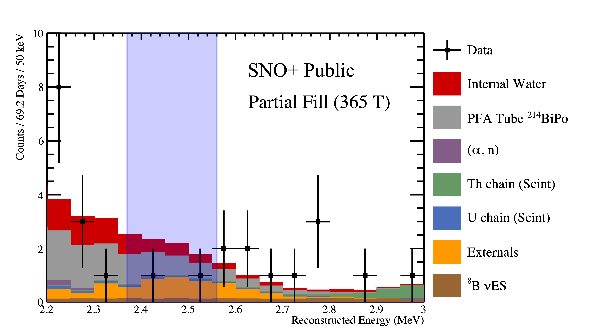

Partial Fill ROI

Liquid scintillator background characterisation for the neutrinoless double beta decay region of interest (ROI) for the SNO+ partial fill, when the detector was filled with 365 tonnes of liquid scintillator (LAB + 0.6 g/L PPO) on top of 479 tonnes of ultrapure water.